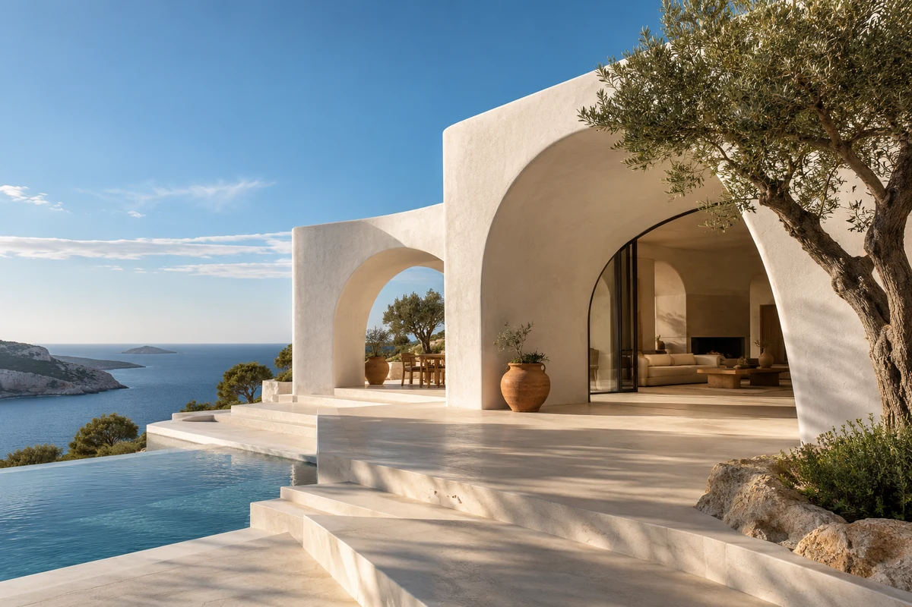
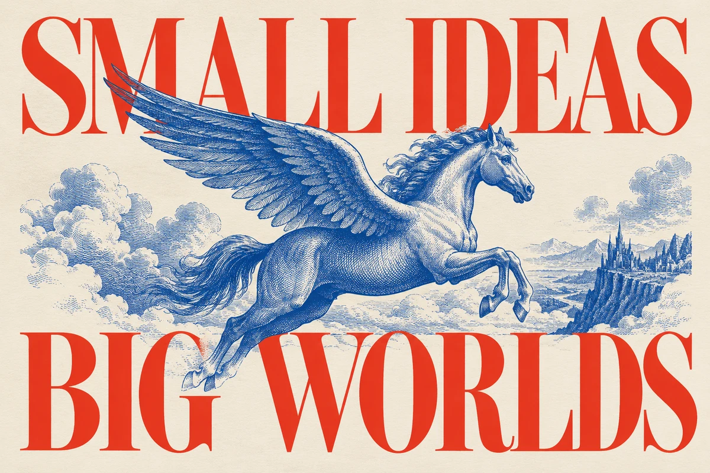

建议这样做 待确认
整理参考，确定页面结构
搭建作品展示与项目详情
检查布局并生成预览
调整计划
一张参考图，一段笔记，或者还没想清楚的一句话。


从灵感开始和 T 一起，把想法变成作品。
一个问题、一个念头，都可以。
01 / 说出想法和 T 一起，把想法变成作品。
02 / 先确认，再动手和 T 一起，把想法变成作品。
web_searchwrite_fileread_file03 / 跟进执行和 T 一起，把想法变成作品。
A selection of architecture, interiors and places to slow down.
04 / 打开作品和 T 一起，把想法变成作品。
A selection of architecture, interiors and places to slow down.
05 / 继续对话，继续完善和 T 一起，把想法变成作品。
从第一句话，到属于你的作品。
开始你的下一个作品和 T 一起，把想法变成作品。